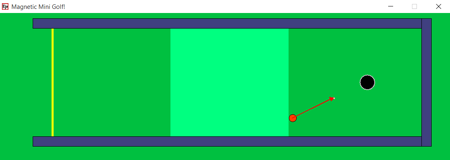

The example programs I looked at were working with arrays, and I was not. I found it challenging at times just to use code specific to a single ball, oddly enough.
The theta dial turned out to be the biggest time sink in proportion to its importance in the program. It's settings were challenging for me to configure.
I also had trouble letting go of the idea that every program needs a for-loop, more or less.
The events' collisions were the most challenging aspect of the programming. I had to be much more careful with that code and felt like what I was writing was often redundant. I would remove the repeated code only to find the program had ceased to work. That was frustrating, what with my gut saying something was wrong with my setup. The coding may be clunky in places, perhaps, but I wanted to stick to the functioning game.